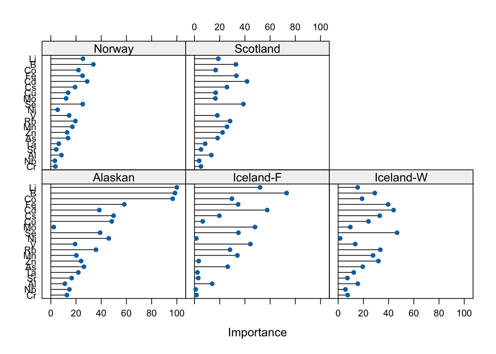

# Chargement des packages nécessaires
install.packages("lattice")
library(readr)
library(dplyr)
library(ggplot2)
library(caret)
library(pls)
library(tidyr)
library(tidyverse)
library(factoextra)
library(FactoMineR)
# Lecture du fichier CSV
ICPMS_Raw_data <- read_csv("./ICPMS.csv")
# Conversion de la variable 'Class' en facteur
ICPMS_Raw_data$Class <- as.factor(ICPMS_Raw_data$Class)
# Sélection des 20 éléments restants
selected_elements <- c("7 Li [ No Gas ]", "11 B [ No Gas ]", "27 Al [ He ]", "51 V [ He ]", "52 Cr [ He ]", "55 Mn [ He ]", "56 Fe [ He ]", "59 Co [ He ]", "60 Ni [ He ]", "63 Cu [ He ]", "66 Zn [ He ]", "75 As [ He ]", "78 Se [ He ]", "85 Rb [ He ]", "88 Sr [ He ]", "93 Nb [ He ]", "95 Mo [ He ]", "111 Cd [ He ]", "133 Cs [ He ]", "181 Ta [ He ]")
# Sélectionner les colonnes spécifiées
selected_data <- ICPMS_Raw_data[, c("Class", selected_elements)]
# Renommer les colonnes
names(selected_data)[-1] <- c("Li", "B", "Al", "V", "Cr", "Mn", "Fe", "Co", "Ni", "Cu", "Zn", "As", "Se", "Rb", "Sr", "Nb", "Mo", "Cd", "Cs", "Ta")
# Sélection des colonnes
selected_data <- ICPMS_Raw_data %>%
select(Class, all_of(selected_elements)) %>%
rename(
Li = `7 Li [ No Gas ]`,
B = `11 B [ No Gas ]`,
Al = `27 Al [ He ]`,
V = `51 V [ He ]`,
Cr = `52 Cr [ He ]`,
Mn = `55 Mn [ He ]`,
Fe = `56 Fe [ He ]`,
Co = `59 Co [ He ]`,
Ni = `60 Ni [ He ]`,
Cu = `63 Cu [ He ]`,
Zn = `66 Zn [ He ]`,
As = `75 As [ He ]`,
Se = `78 Se [ He ]`,
Rb = `85 Rb [ He ]`,
Sr = `88 Sr [ He ]`,
Nb = `93 Nb [ He ]`,
Mo = `95 Mo [ He ]`,
Cd = `111 Cd [ He ]`,
Cs = `133 Cs [ He ]`,
Ta = `181 Ta [ He ]`
)
# Sélection des colonnes à normaliser
columns_to_normalize <- c("Li", "B", "Al", "V", "Cr", "Mn", "Fe", "Co", "Ni", "Cu", "Zn", "As", "Se", "Rb", "Sr", "Nb", "Mo", "Cd", "Cs", "Ta")
# Création d'une fonction pour la normalisation min-max
min_max_normalize <- function(x) {
(x - min(x)) / (max(x) - min(x))
}
# Appliquer la fonction de normalisation min-max à chaque colonne sélectionnée
normalized_data <- selected_data %>%
mutate(across(all_of(columns_to_normalize), min_max_normalize))
# Nettoyage des données (exemple : supprimer les lignes avec des valeurs manquantes)
clean_data <- na.omit(normalized_data)Introduction et démarche
L’étude initiale, issue de la publication “Data fusion and multivariate analysis for food authenticity analysis”, avait pour objectif d’établir un modèle permettant de déterminer l’authenticité du saumon en fonction de son origine géographique et de son mode d’élevage. Pour ce faire, les chercheurs se sont appuyés sur une base de données constituée de 521 échantillons de saumon provenant de fournisseurs de quatre pays différents (Alaska, Écosse, Norvège et Islande), avec des méthodes de production sauvage ou d’élevage, chaque pays ayant ses spécificités propres.1
Ainsi, les chercheurs ont utilisé la spectrométrie de masse à plasma à couplage inductif (ICP-MS), une des techniques spectrométriques les plus importantes. Sa sensibilité extrêmement élevée et une large plage dynamique linéaire permettent l’analyse simultanée des composants principaux et des ultra-traces. Cette technique est capable d’analyser des éléments de Li à U et peut être appliquée aux solutions et aux solides. Son utilisation permet donc l’analyse quantitative d’éléments mineurs et est utilisée dans un large panel de processus industriels et agroalimentaires : qualification des matières premières, sécurité des produits, recherche et développement, contrôle de la production, analyse des défaillances, etc.2
La démarche suivie dans cette analyse a été méthodique, impliquant plusieurs étapes clés pour aboutir à une interprétation cohérente des résultats. Tout d’abord, une analyse descriptive du jeu de données partiel a été réalisée, comprenant 20 éléments chimiques au lieu des 37 initiaux. Les variables des éléments chimiques ont été renommées et normalisées entre 0 et 1. Cette première analyse consistait en la visualisation des statistiques de base des variables (Min, Q1, médiane, Q3, max et moyenne), de leurs valeurs atypiques ou des potentielles valeurs manquantes, ainsi qu’à l’observation des corrélations entre les variables. Les résultats ont été interprétés pour identifier les tendances et les relations entre les variables.
Ensuite, le jeu de données a été divisé en deux ensembles : un ensemble d’apprentissage et un ensemble de test, en fonction de la variable de classe, et le jeu de test est réservé exclusivement à l’évaluation de la performance du modèle. On a procédé à l’ajustement d’un modèle de prédiction. En parallèle, un modèle PLS-DA a été ajusté en utilisant la méthode des moindres carrés partiels avec une validation croisée à 5 plis. Les résultats de la validation croisée ont été minutieusement analysés pour sélectionner le nombre optimal de composantes latentes. La performance du modèle a été évaluée en termes d’exactitude, de kappa et d’autres métriques, tandis que sa qualité prédictive a été évaluée en utilisant la matrice de confusion, la précision, le rappel et le score F1 sur l’ensemble de test. De plus, les variables importantes pour la discrimination entre les classes ont été identifiées à partir de l’importance des variables dans le modèle PLS-DA. Tous ces résultats ont ensuite été visualisés pour faciliter leur interprétation.
En conclusion, cette approche méthodique et exhaustive a permis d’explorer et d’analyser en profondeur les données ICP-MS Raw, en mettant en lumière les modèles, les tendances et les relations entre les variables. Les conclusions tirées fournissent une base solide pour comprendre et interpréter les mécanismes sous-jacents ainsi que les facteurs influençant les différentes classes présentes dans les données.
Statistiques descriptives
Le jeu de données comprend 20 éléments chimiques, pour lesquels des statistiques descriptives ont été calculées. Les valeurs ont été normalisées pour rendre les variables comparables, révélant ainsi des distributions distinctes pour chaque variable. Dans l’ensemble, les distributions semblent être orientées vers le bas, suggérant une concentration relativement faible des éléments chimiques. De plus, il y a une présence notable de valeurs aberrantes potentielles, ce qui peut nécessiter une attention particulière lors de l’analyse.
# Boxplots et moyennes des variables numériques
boxplot(clean_data[, -1], main = "Boxplot des variables normalisées")
points(colMeans(clean_data[, -1]), col = "red", pch = 19)Nous avons représenté chaque observation sur un plan bidimensionnel et de regrouper les pays fournisseurs par couleur. Dans ce contexte, la Figure 2 nous permet de conLirmer que le saumon de chaque pays a bien une composition différente des éléments chimiques sé lectionné s. Par exemple, il est possible de constater que les saumons d’Alaska et les saumons sauvages d’Islande ont des compositions globalement diffé rentes pour les molécules sélectionnées.
# Projection bidimensionelle des individus (modèle PCA)
pca_spectro <- PCA(clean_data[,-1], scale.unit = TRUE, graph = FALSE)
summary(pca_spectro)
Call:
PCA(X = clean_data[, -1], scale.unit = TRUE, graph = FALSE)
Eigenvalues
Dim.1 Dim.2 Dim.3 Dim.4 Dim.5 Dim.6 Dim.7
Variance 5.991 2.698 2.069 1.552 1.431 1.072 0.930
% of var. 29.954 13.489 10.345 7.760 7.156 5.360 4.649
Cumulative % of var. 29.954 43.443 53.788 61.549 68.705 74.064 78.714
Dim.8 Dim.9 Dim.10 Dim.11 Dim.12 Dim.13 Dim.14
Variance 0.779 0.715 0.670 0.504 0.343 0.299 0.252
% of var. 3.893 3.573 3.349 2.522 1.715 1.493 1.258
Cumulative % of var. 82.607 86.180 89.529 92.050 93.766 95.259 96.518
Dim.15 Dim.16 Dim.17 Dim.18 Dim.19 Dim.20
Variance 0.209 0.160 0.136 0.093 0.059 0.040
% of var. 1.043 0.798 0.680 0.465 0.297 0.198
Cumulative % of var. 97.561 98.359 99.039 99.505 99.802 100.000
Individuals (the 10 first)
Dist Dim.1 ctr cos2 Dim.2 ctr cos2 Dim.3 ctr
1 | 3.735 | 1.256 0.051 0.113 | 2.171 0.335 0.338 | -0.281 0.007
2 | 3.250 | -1.375 0.061 0.179 | 1.060 0.080 0.106 | -0.215 0.004
3 | 2.595 | -1.153 0.043 0.197 | 1.459 0.151 0.316 | 0.021 0.000
4 | 3.336 | -1.474 0.070 0.195 | 1.112 0.088 0.111 | 0.910 0.077
5 | 4.185 | -0.026 0.000 0.000 | 3.381 0.813 0.653 | -0.315 0.009
6 | 2.647 | -1.084 0.038 0.168 | 0.487 0.017 0.034 | 0.351 0.011
7 | 3.941 | -2.618 0.220 0.441 | 1.714 0.209 0.189 | 0.210 0.004
8 | 2.679 | -1.238 0.049 0.214 | 1.420 0.143 0.281 | 0.369 0.013
9 | 3.600 | -2.615 0.219 0.528 | 0.932 0.062 0.067 | 0.008 0.000
10 | 3.501 | -2.477 0.197 0.501 | 0.631 0.028 0.032 | -0.256 0.006
cos2
1 0.006 |
2 0.004 |
3 0.000 |
4 0.074 |
5 0.006 |
6 0.018 |
7 0.003 |
8 0.019 |
9 0.000 |
10 0.005 |
Variables (the 10 first)
Dim.1 ctr cos2 Dim.2 ctr cos2 Dim.3 ctr cos2
Li | 0.150 0.373 0.022 | 0.702 18.292 0.493 | -0.153 1.138 0.024 |
B | -0.212 0.751 0.045 | 0.692 17.759 0.479 | 0.046 0.100 0.002 |
Al | 0.327 1.789 0.107 | -0.058 0.124 0.003 | -0.309 4.610 0.095 |
V | 0.004 0.000 0.000 | 0.280 2.906 0.078 | 0.108 0.559 0.012 |
Cr | 0.285 1.354 0.081 | 0.293 3.173 0.086 | 0.239 2.769 0.057 |
Mn | 0.745 9.272 0.555 | -0.051 0.095 0.003 | -0.254 3.124 0.065 |
Fe | 0.734 8.982 0.538 | 0.367 5.002 0.135 | -0.056 0.149 0.003 |
Co | 0.590 5.817 0.349 | -0.484 8.673 0.234 | -0.035 0.060 0.001 |
Ni | 0.062 0.063 0.004 | 0.556 11.472 0.309 | 0.384 7.142 0.148 |
Cu | 0.637 6.769 0.406 | 0.485 8.719 0.235 | 0.228 2.504 0.052 |fviz_pca_ind(pca_spectro,
habillage = clean_data$Class,
geom = "point",
palette = "jco",
addEllipses = T, # Ajouter des ellipses de confiance
legend.title = "Supplying country",
title = "Projection des individus (PCA)")Analyse des Corrélations
#Corrélations entre les variables
cor_matrix <- cor(clean_data[, -1]) # Exclure la variable de classe
corrplot::corrplot(cor_matrix, method = "circle")# Sélectionner les corrélations supérieures à 0.8
high_corr <- which(cor_matrix > 0.8 & cor_matrix < 1, arr.ind = TRUE)
# Afficher les paires de variables corrélées
high_corr_pairs <- data.frame(row = rownames(cor_matrix)[high_corr[,1]],
col = colnames(cor_matrix)[high_corr[,2]],
corr_value = cor_matrix[high_corr])
high_corr_pairs row col corr_value
1 Se Zn 0.8192668
2 Zn Se 0.8192668
3 Cs Rb 0.8668789
4 Ta Nb 0.9427543
5 Rb Cs 0.8668789
6 Nb Ta 0.9427543Les résultats de l’analyse des corrélations suggèrent également qu’il existe des corrélations significatives entre certaines paires de variables. Par exemple, la corrélation des éléments chimiques Se et Zn est de 0.82, celle des éléments chimiques Cs et Rb est de 0.87, et celle des éléments chimiques Ta et Nb est de 0.94. Ces fortes corrélations peuvent indiquer une relation chimique ou géologique commune entre ces éléments. Ces résultats peuvent servir de base pour des analyses plus avancées ou pour formuler des hypothèses à explorer davantage dans notre étude.
Découpage du Jeu de Données
# Distribution de la variable Class
table(clean_data$Class)
Alaskan Iceland-F Iceland-W Norway Scotland
99 55 90 100 177 # Définition de la variable de classe
classe_variable <- "Class"
# Création de l'ensemble d'apprentissage et de l'ensemble de test
set.seed(123) # Pour la reproductibilité
index <- createDataPartition(clean_data[[classe_variable]], p = 0.8, list = FALSE)
data_train <- clean_data[index, ]
data_test <- clean_data[-index, ]
# Définition du contrôle de la validation croisée
train_control <- trainControl(method = "cv", number = 5) # Validation croisée à 5 plis
# Ajustement du modèle PLS-DA
pls_model <- train(Class ~ ., data = data_train, method = "pls", trControl = train_control, preProc = c("center", "scale"))Nous avons stratifié notre jeu de données en un ensemble d’apprentissage et un ensemble de test en utilisant la variable de classe “Class” comme référence pour notre prédiction. Cette division nous a permis de réserver 80% des données pour l’apprentissage et 20% pour l’évaluation. Pour garantir la reproductibilité, nous avons fixé une graine aléatoire. Les données sélectionnées ont été utilisées pour former l’ensemble d’apprentissage, tandis que les observations restantes ont constitué l’ensemble de test. Cette approche rigoureuse nous permettra d’évaluer la performance du modèle sur des données inconnues, assurant ainsi sa capacité à généraliser au-delà des données d’entraînement.
Modèle PLS-DA
Nous avons débuté en ajustant un modèle PLS-DA à l’aide de la méthode des moindres carrés partiels, une approche courante pour traiter des données multivariées telles que celles que nous avons utilisées. Ce modèle a été formé sur un ensemble d’apprentissage comprenant 418 échantillons et 20 prédicteurs, qui sont les éléments chimiques étudiés. Avant d’ajuster le modèle, nous avons centré et mis à l’échelle nos données pour garantir une comparaison juste entre les différentes variables.
En évaluant les performances du modèle, nous nous sommes concentrés sur deux principales métriques : l’exactitude (Accuracy) et le coefficient Kappa. L’exactitude mesure simplement le nombre de prédictions correctes par rapport au nombre total d’échantillons, tandis que le coefficient Kappa prend également en compte la possibilité de prédictions correctes dues au hasard.
En explorant différentes configurations de notre modèle, nous avons constaté que l’exactitude atteignait son maximum, dépassant les 85%, lorsque nous utilisions trois composantes latentes. Cela signifie que l’ajout d’une troisième composante latente a considérablement amélioré la capacité du modèle à prédire avec précision la classe à laquelle chaque échantillon appartient.
Pour mieux comprendre la qualité de nos prédictions, nous avons également visualisé les valeurs prédites par rapport aux valeurs réelles. Cette analyse visuelle nous a permis de confirmer que notre modèle était capable de discriminer efficacement entre les différentes classes, renforçant ainsi notre confiance dans ses performances.
En résumé, notre modèle PLS-DA a présenté des performances robustes, avec une exactitude dépassant les 85% lors de la validation croisée. Cela suggère que notre modèle est capable de classifier avec précision les échantillons de notre ensemble de test, ce qui est essentiel pour son utilisation dans des applications pratiques.
# Affichage des résultats
print(pls_model)Partial Least Squares
418 samples
20 predictor
5 classes: 'Alaskan', 'Iceland-F', 'Iceland-W', 'Norway', 'Scotland'
Pre-processing: centered (20), scaled (20)
Resampling: Cross-Validated (5 fold)
Summary of sample sizes: 335, 334, 335, 333, 335
Resampling results across tuning parameters:
ncomp Accuracy Kappa
1 0.4999150 0.3001568
2 0.6699453 0.5504397
3 0.8563616 0.8079397
Accuracy was used to select the optimal model using the largest value.
The final value used for the model was ncomp = 3.Qualité prédictive du modèle
# Visualisation de la performance du modèle
plot(pls_model)model=pls_model
# Prédictions sur les données de test
predictions <- predict(model, newdata = data_test)
# Matrice de confusion
conf_matrix <- table(predictions, data_test$Class)
print(conf_matrix)
predictions Alaskan Iceland-F Iceland-W Norway Scotland
Alaskan 19 0 0 0 0
Iceland-F 0 3 0 0 1
Iceland-W 0 0 18 0 0
Norway 0 0 0 14 0
Scotland 0 8 0 6 34# Calcul de la précision
accuracy <- sum(diag(conf_matrix)) / sum(conf_matrix)
print(paste("Accuracy:", accuracy))[1] "Accuracy: 0.854368932038835"# Calcul du rappel (recall)
recall <- ifelse(rowSums(conf_matrix) == 0, 0, diag(conf_matrix) / rowSums(conf_matrix))
print(paste("Recall:", mean(recall)))[1] "Recall: 0.891666666666667"# Calcul du score F1
precision <- ifelse(colSums(conf_matrix) == 0, 0, diag(conf_matrix) / colSums(conf_matrix))
f1_score <- 2 * precision * recall / (precision + recall)
f1_score <- ifelse(is.nan(f1_score), 0, f1_score)
print(paste("F1 Score:", mean(f1_score)))[1] "F1 Score: 0.808561304039688"# Identification des variables importantes
importance <- varImp(model)
print(importance)pls variable importance
variables are sorted by maximum importance across the classes
Alaskan Iceland-F Iceland-W Norway Scotland
Li 100.000 52.0291 15.497 25.536 18.905
B 98.505 73.0845 29.044 33.718 32.829
Co 96.684 29.7344 18.953 21.950 16.758
Fe 58.308 34.5963 39.616 25.179 33.271
Cd 38.493 57.6616 43.966 28.827 41.665
Cs 49.781 19.7080 32.947 19.255 25.720
Cu 48.331 6.5322 24.046 13.738 16.774
Mo 2.339 48.0290 9.614 12.140 16.564
Se 39.108 34.8579 46.696 25.347 38.799
Ni 45.962 1.5089 1.502 5.393 0.000
V 19.252 44.3271 13.504 14.516 18.063
Rb 35.831 28.1526 33.454 19.510 28.212
Mn 20.278 34.0469 27.672 17.111 25.811
Zn 24.049 3.3185 31.936 12.930 22.278
As 26.266 26.3490 19.507 13.706 18.324
Ta 21.809 2.4185 12.359 6.331 8.440
Sr 16.507 2.9853 7.342 4.274 5.187
Al 11.179 14.0218 15.568 8.416 13.395
Nb 14.738 0.9783 5.779 3.197 3.721
Cr 12.711 1.6006 7.509 3.640 5.116# Visualisation de l'importance des variables
plot(importance)
La matrice de confusion est un outil essentiel pour évaluer la performance d’un modèle de classification comme le PLS-DA. Elle présente les résultats des prédictions du modèle par rapport aux classes réelles dans le jeu de test. Chaque cellule de la matrice représente le nombre d’observations pour lesquelles le modèle a prédit une classe spécifique (colonnes) par rapport à la classe réelle (lignes). Par exemple, si nous considérons la première ligne de la matrice, elle indique que le modèle a correctement classé 19 échantillons comme étant de la classe ‘Alaskan’, sans aucune erreur de classification pour les autres classes.
L’exactitude (accuracy) est une mesure globale de la performance du modèle, calculée comme le rapport entre le nombre total de prédictions correctes et le nombre total d’observations dans le jeu de test. Une exactitude élevée, comme celle observée ici à environ 85.4%, indique que le modèle a réussi à prédire correctement la grande majorité des échantillons.
Le rappel (recall) est une mesure de la capacité du modèle à identifier correctement les observations positives parmi toutes les observations réellement positives. Il est calculé comme le rapport entre le nombre de vrais positifs et la somme des vrais positifs et des faux négatifs. Un rappel élevé, tel que celui observé ici à environ 89.2%, indique que le modèle a une bonne capacité à rappeler les vraies observations positives.
Le score F1 est une mesure combinée de la précision et du rappel du modèle, calculée comme la moyenne harmonique de ces deux métriques. Il tient compte à la fois des faux positifs et des faux négatifs. Un score F1 élevé, comme celui obtenu ici à environ 80.9%, suggère un bon équilibre entre la précision et le rappel du modèle.
En conclusion, les résultats de la matrice de confusion, de l’exactitude, du rappel et du score F1 indiquent que le modèle PLS-DA a des performances solides sur les données de test, avec une capacité satisfaisante à prédire correctement les classes des échantillons.
Interprétation du modèle ajusté
L’analyse de l’interprétation du modèle PLS-DA révèle les éléments chimiques les plus pertinents pour la discrimination entre les différentes classes. Ces éléments sont classés en fonction de leur importance maximale à travers les différentes classes. Par exemple, le lithium (Li) est identifié comme étant le plus important pour discriminer la classe ‘Alaskan’, tandis que le bore (B) est crucial pour la classe ‘Iceland-F’. Les valeurs attribuées à chaque élément indiquent leur contribution relative à la discrimination des classes, les valeurs plus élevées reflétant une contribution plus significative. Le graphique représente visuellement cette importance des variables pour chaque classe, où les barres plus hautes correspondent à une plus grande importance dans la discrimination de la classe correspondante.
Cette analyse permet ainsi d’identifier les éléments chimiques clés influençant la classification des saumons entre sauvage et d’élevage, fournissant ainsi de précieuses informations pour comprendre les compositions permettant la différenciation des échantillons.
Footnotes
Hong, Y., Birse, N., Quinn, B., Li, Y., Jia, W., McCarron, P., Wu, D., Rosas da Silva, G., Vanhaecke, L., van Ruth, S., & Elliott, C. T.(2023).Data fusion and multivariate analysis for food authenticity analysis.Nature Communications, 14, Article 3309. https://doi.org/10.1038/s41467-023-38382-z↩︎
https://www.euro.fr/materials-and-engineering-sciences/nos-techniques/icp-ms/↩︎